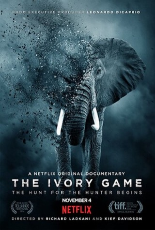
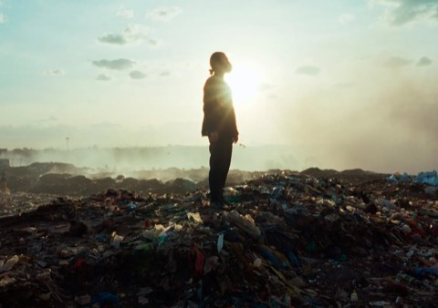

About the film

With over 150,000 elephants killed in the past five years for their tusks, THE IVORY GAME documents the urgent plight of the African elephant as it falls victim to a vast underground trade, where a single kilogram of ivory can sell for $3,000. With astonishing footage and a globe-spanning investigation, the film follows the work of wildlife activists, investigators and a Chinese journalist who risk their own lives to take down poachers in Africa and black marketeers in Asia, in a daring effort to save the last remaining elephants. Along the way, the young journalist reexamines the time-honored role of the investigative reporter as uninvolved observer of wrongdoing.
At the festival
- 2016 Opening Night · DC Premiere · Thursday, October 6, 2016 · 7:00 PM · National Portrait GalleryPost-screening discussion to follow with: Kief Davidson, co-director, THE IVORY GAME; Richard Ladkani, co-director, THE IVORY GAME; Andrea Crosta, executive director and co-founder, WildLeaks; Hongxiang Huang, independent journalist.
Sessions about this film
- 2016 · Thu Oct 6 · 1:15 PMPanelInvestigations with an Agenda: Navigating Loaded TerrainRichard Behar, Ted Braun, Andrea Crosta, Hongxiang Huang, Christine Richard, Glenn Simpson
More films on these topics

Dust to DustKôsai Sekine2024 · 89 min- In Dry WaterKevin Clancy2019 · 14 min
 Rhapsody on the Outlaw OceanIan Urbina2026 · 61 min
Rhapsody on the Outlaw OceanIan Urbina2026 · 61 min- Short Strand: Against the GrainSteven Leckart, Maia Wikler2026
 The Sludge WarGalassia Grassetto2026 · 80 min
The Sludge WarGalassia Grassetto2026 · 80 min Wild EastMaia Wikler2026 · 39 min
Wild EastMaia Wikler2026 · 39 min